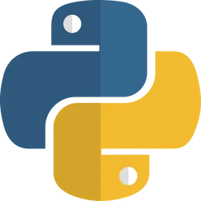
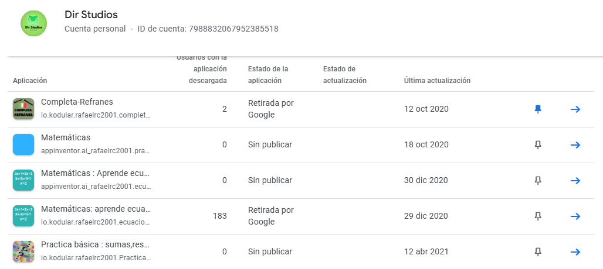

Redes,Programación y Desarrollo.
üñ•Ô∏èüßë‚Äçüíª
Soy un Ingeniero en Sistemas Computacionales.
Mi experiencia incluye una amplia gama de habilidades y conocimientos en la informática.
No dudes en contactar.
Creación de aplicaciones y sistemas que resuelven problemas, integrando diversas tecnologías y plataformas.
Más informaciónDiseño e implementación de interfaces para automatizar hardware y desarrollar software asociado.
Más informaciónDiseño, implementación y gestión de bases de datos, optimizando recursos y asegurando seguridad.
Más informaciónDesarrollo y administración de software para mejorar productividad y competitividad, cumpliendo estándares de calidad.
Más informaciónSelección de tecnologías de hardware para soportar aplicaciones de manera efectiva.
Más informaciónDiseño y gestión de redes de computadoras, asegurando conectividad y cumpliendo normas vigentes.
Más informaciónCompromiso con la integridad, responsabilidad y respeto en todas las actividades profesionales.
Búsqueda constante de soluciones creativas y tecnologías emergentes para resolver problemas complejos.
Dedicación a la calidad y mejora continua en el desarrollo de software y soluciones tecnológicas.
Trabajo en equipo multidisciplinario para lograr objetivos comunes y fomentar la diversidad de ideas.
Compromiso con el impacto positivo de la tecnología en la sociedad y el bienestar de las comunidades.
Habilidad para ajustarse a cambios tecnológicos y entornos dinámicos, manteniendo la eficiencia y efectividad.
CLI en C# para generar sitios web estáticos.

Análisis exploratorio de datos del catálogo de Netflix.

Proyectos en kaggle.

Concurso de desarrollo y algoritmos.
Aplicaciones de android.

Sígueme en mis redes sociales